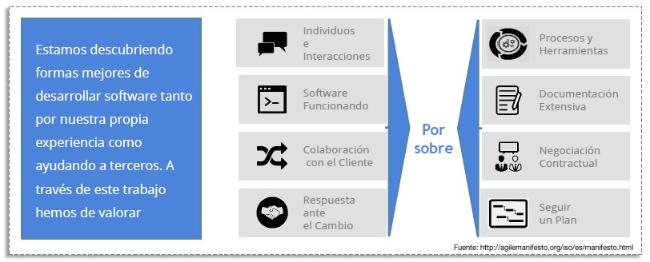

Para poder clasificar las distintas medologías y fases para desarrollar sistemas de información, necesitamos conocer la definición de una metodología. Una metodología es el conjunto de pasos y procedimientos que se siguen para desarrollar un sistema de información. Algunas metodologías comunes son el ciclo de vida del software y el enfoque ágil.
El ciclo de vida del software incluye las siguientes fases:
- Análisis de requerimientos: se recopila información sobre los requerimientos del sistema y se identifican los objetivos del negocio.
- Diseño: se crea un plan detallado para el desarrollo del sistema.
- Implementación: se codifica el sistema y se realizan pruebas para asegurar su correcto funcionamiento.
- Pruebas: se evalúa el sistema para detectar y corregir errores.
- Mantenimiento: se realizan actualizaciones y mejoras al sistema para adaptarlo a los cambios en el negocio.
El enfoque ágil es una metodología que se enfoca en la entrega continua y la colaboración constante con el cliente. En lugar de seguir un plan detallado, el enfoque ágil se adapta a los cambios y se entrega el sistema en pequeños incrementos.
Los sistemas de información gerencial:
Los sistemas de información gerencial (SIG) son un conjunto de herramientas y tecnologías que ayudan a las empresas a recolectar, almacenar, procesar y analizar datos para mejorar la toma de decisiones y el desempeño general de la empresa. Los SIG suelen incluir módulos como el procesamiento de transacciones, la contabilidad, la gestión de inventarios, la gestión de recursos humanos, la gestión de relaciones con los clientes, entre otros.
Los SIG pueden ayudar a las empresas a:
- Mejorar la eficiencia y la productividad al automatizar tareas manuales y procesos.
- Tomar decisiones informadas al proporcionar información precisa y actualizada.
- Identificar oportunidades de negocio y tendencias al analizar grandes cantidades de datos.
- Mejorar la comunicación y la colaboración al proporcionar una visibilidad en tiempo real de los procesos y actividades de la empresa
- Reducir costos al eliminar la necesidad de redundancia y errores en los datos.
En resumen, el desarrollo de sistemas de información gerencial puede seguir una metodología basada en el ciclo de vida del software o en el enfoque ágil, ambos tienen sus propias fases y características.
Los SIG se utilizan en una variedad de industrias, desde la fabricación y el comercio minorista hasta la atención médica y la banca. Pueden ser implementados en una variedad de plataformas, incluyendo sistemas locales, nube, o una combinación de ambos.
Hay varios tipos de metodologías de desarrollo de sistemas, algunas de las más comunes son:
- Ciclo de vida del software: Es un enfoque tradicional que se divide en varias fases, desde la planificación hasta el mantenimiento. Es utilizado para proyectos grandes y complejos, y su principal característica es que cada fase se completa antes de pasar a la siguiente.
- Estructura lineal: el progreso fluye en una sola dirección (no hay saltos ni omisiones).
- Comportamiento secuencial: se espera que los equipos sean coherentes y ordenados en el cumplimiento de las tareas (no hacer cambios en el procedimiento, por ejemplo).
- El cronograma importa: cumplir con los plazos de entrega es muy importante en este tipo de gestión de proyectos. Un ligero atraso puede perjudicar toda la estructura.
- Sistema abierto a la integración: a menudo, el tamaño del equipo crece a medida que se completan las tareas iniciales (que suelen ser más sencillas) y se comienza a trabajar en los pendientes más complejos.
- Ágil: Es uno de los tipos de gestión de proyectos más aprobados por la industria del software. Es un enfoque que se centra en la entrega continua y la colaboración constante con el cliente. Se divide en iteraciones cortas, cada una con un objetivo específico. Es utilizado para proyectos de menor complejidad o para proyectos con un alto grado de incertidumbre.
- La prioridad es satisfacer al cliente y, para ello, se prioriza la entrega de software con valor.
- Se acepta que los requisitos cambien, aunque esto ocurra en etapas tardías del desarrollo. Los procesos Ágiles aprovechan el cambio para ofrecer ventaja a los clientes.
- Los administrativos y los desarrolladores trabajan juntos a diario y durante todo el ciclo de vida del proyecto.
- El desarrollo del proyecto gira en torno a un equipo motivado. Para que la motivación se mantenga, hay que brindar un entorno óptimo y apoyo constante.
- El modo más eficiente y efectivo para comunicar información a un equipo es la conversación cara a cara.
- Un software que funciona es la principal medida de progreso.
- Los procesos Ágiles impulsan el desarrollo sostenible.
- Poner atención a la excelencia técnica y al buen diseño optimiza la Agilidad.
- Con frecuencia, el equipo reflexiona acerca de cómo ser más efectivo y, guiándose por una crítica objetiva, perfecciona sus procesos.
- Scrum: Es una metodología ágil específica que se enfoca en el trabajo en equipo, la entrega continua y la mejora continua. Se divide en sprints, cada uno con un objetivo específico. Es utilizado para proyectos de software de gran complejidad.
- Kanban: Es una metodología que se enfoca en el flujo de trabajo y la mejora continua. Utiliza un tablero para visualizar el estado actual del proyecto. Es utilizado para proyectos con un alto grado de incertidumbre o para proyectos en los que se requiere una alta flexibilidad.
Metodología Waterfall: Es una metodología tradicional en la que cada fase del desarrollo se completa antes de pasar a la siguiente. Es utilizado para proyectos con un alto grado de planificación y un bajo grado de incertidumbre.
La metodología Waterfall es un enfoque lineal para gestionar proyectos, en el que los requisitos de la empresa, el cliente y las partes interesadas se recopilan al principio del proyecto.
Manifiesto por el Desarrollo Ágil de Software: Estamos descubriendo formas mejores de desarrollar software tanto por nuestra propia experiencia como ayudando a terceros. Referencia:
En resumen, la elección de una metodología de desarrollo de sistemas dependerá del tamaño y complejidad del proyecto, así como del grado de incertidumbre y flexibilidad requeridos. Cada metodología tiene sus propias características y ventajas, y es importante elegir la que mejor se adapte a las necesidades del proyecto
 Esto significa que valoramos más los de la izquierda, pero también valoramos los de la derecha.Referencias Bibliografica: